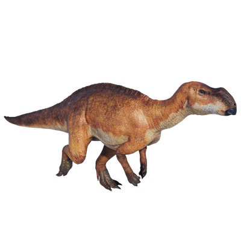

Useful Website
Named after the location of its discovery, Muttaburra in Queensland, Australia, Muttaburrasaurus is a genus of herbivorous ornithopod notable for its flat skull and blunt snout. It can grow up to 9m in length and almost three tonnes in weight, while its strong jaws and serrated teeth allow it to tear leaves, branches and shrubs with ease.
